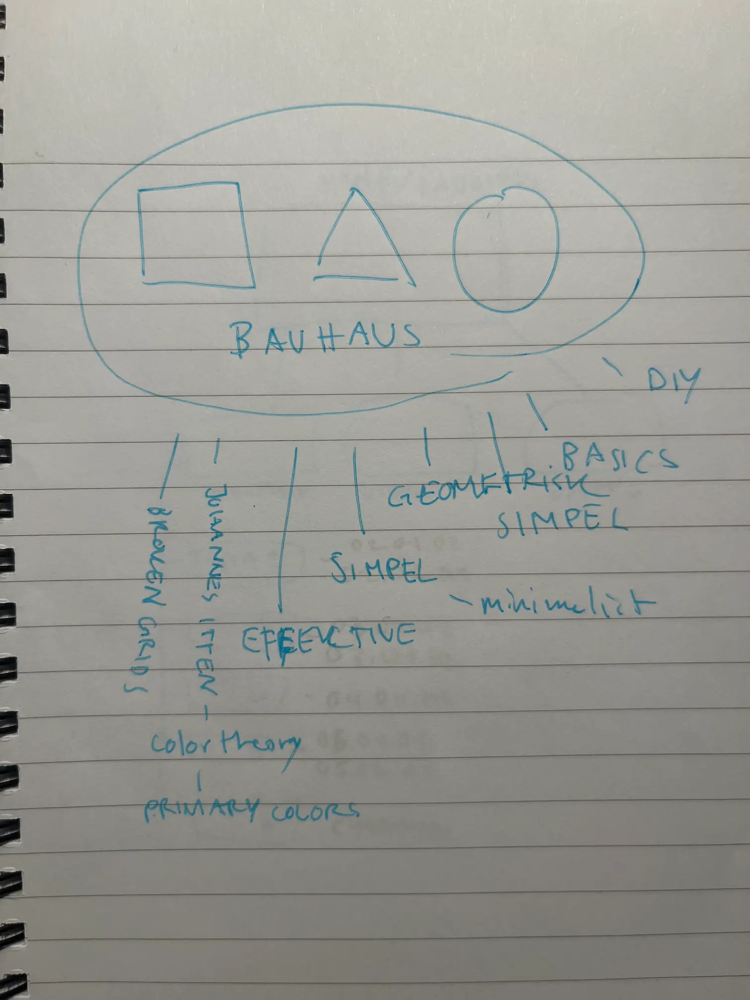
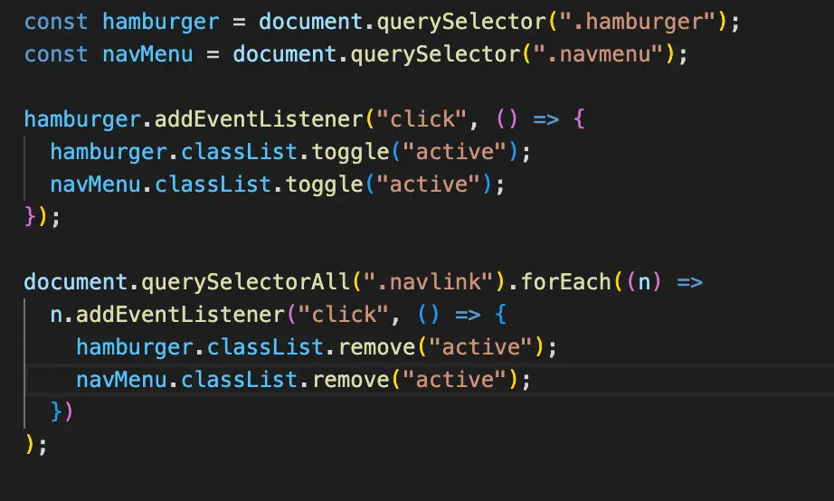

Tema 06
Eksamnensopgave
Som det allerførste læste jeg opgavebeskrivelsen grundigt igennem, så jeg havde godt styr på hvad der skulle laves. Derefter samlede jeg alt materiale jeg skulle have på mit portfolio-site.
Designprocessen
Jeg startede min design proces med at vælge en designstil, som jeg kunne bruge til inspiration. Jeg besluttede mig for at, vælge Bauhaus og gik straks i gang med at undersøge stilen vha. bogen Bauhaus 1919-1933: Workshops for Modernity. Jeg lavede også en brainstorm ud fra Bauhaus. Således kom jeg rem til mit moodboard, som jeg efter designede vider ud fra.
Så gik jeg i gang med at lave en masse skitser…
Skitser til logo

Skitser til projekt-illustrationer
Skitser til forside
Efter lavede jeg et sitemap og kom jeg frem til wireframes og lavet også styletile til mit site. Da jeg lavede styletile, besluttede jeg mig for mine to fonte, som begge er inspireret af Bauhaus. Jeg valgte også farver og grafik-elementer.
Kodeprocessen
Så gik jeg i gang med at kode. Jeg startede med at sætte det hele op med html – det gik relativt fint uden komplikationer. Så begyndt jeg at style med css vha. stiletyle og wireframes. Jeg har gjort stor brug af grid for at få både mobil og desktop til at virke godt. Til sidst brugte jeg javascript til burgermenuen, så mit site kunne være helt mobil-friendly.
